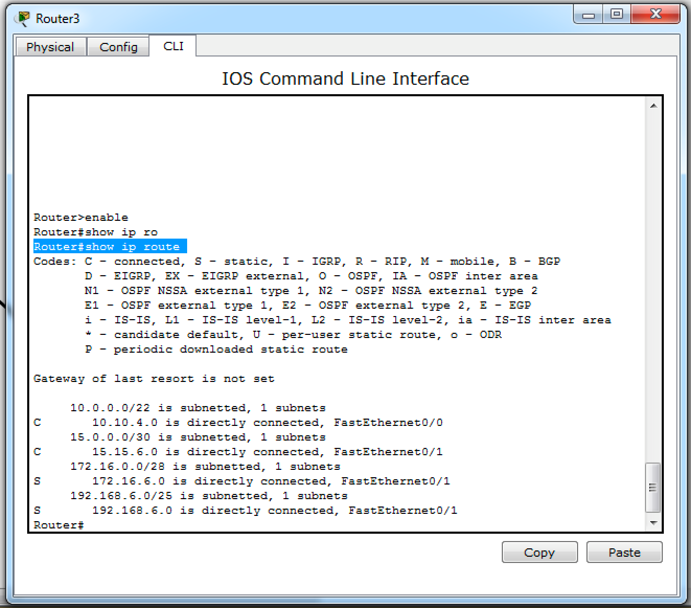
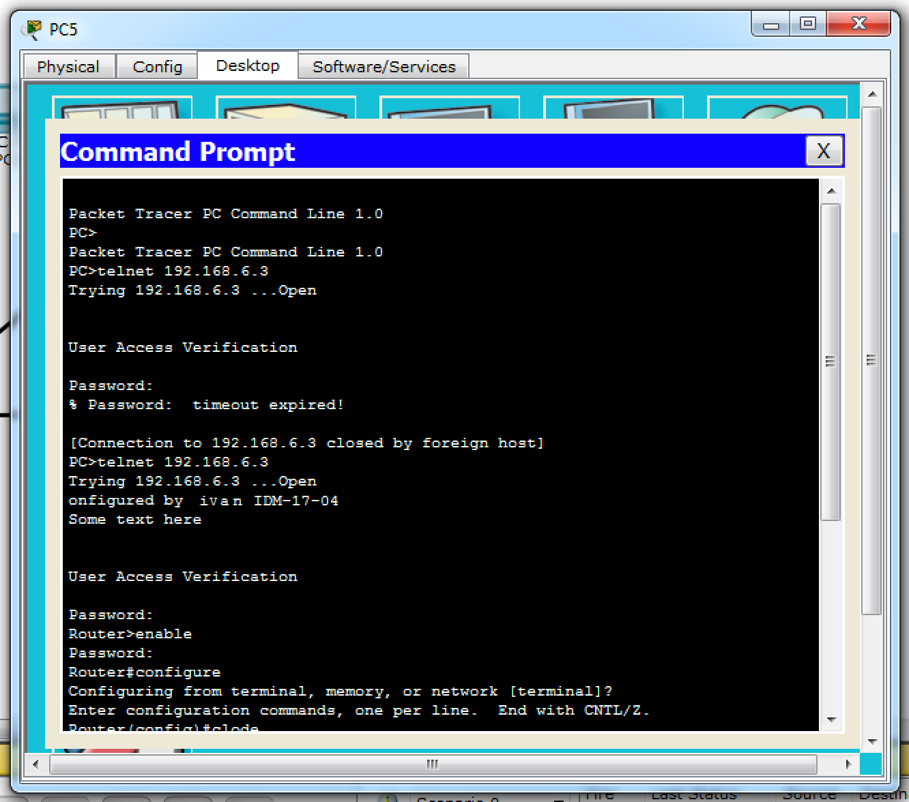

Задачи
- Лабораторная работа №1 Экосистема разработки программ с открытым кодом": Создание персональной страницы-отчета на github и работа с git
- Лабораторная работа №2 "Разработка простого веб-приложения": Проектирование и разработка индивидуального или коллективного веб-приложения (SPA) с использованием html,css,js + json,xml
- Лабораторная работа №3 "Настройка локальной сети передачи данных": Настройка коммутаторов и маршрутизаторов
- Подготовка к экзамену: Самооценка прохождения теста по инновациям, формулировка одного вопроса по теме "Интернет-технологии" в одной из форм, встречающихся в тесте (выбор одного, выбор многих, упорядочивание, соответствие)
Лабораторная работа №1
Работа с Github
Задачи
-
Регистрация на GitHub.
Страница пользователя -
Создать персональную веб страницу-отчет с использованием html, css, js.
Персональная страница-отчет. - Загрузить персональную веб страницу-отчет в репозиторий ИДМ-17 по курсу "Интернет-технологии" на GitHub.
Папка с исходными кодами в репозитории.
Лабораторная работа №2
Разработка простого веб-приложения
Задачи:
- Собрать команду для разработки веб-приложения (SPA) и распределить роли.
Страница команд. - Разработать макет страницы веб-приложения.
Макет страницы. - Прописать js функционал и реализовать возможность чтения json.
JS, JSON
Результат:
Работающий прототип
Лабораторная работа №3
Настройка локальной сети передачи данных
Задачи:
Настройка коммутаторов и маршрутизаторов.
Отчет по лабораторной работе. Вариант 6. Цель лабораторной работы: ознакомиться с принципами работы компьютерных сетей, базовой настройкой сетевого оборудования и статической маршрутизацией.
| Номер варианта | 6 |
|---|---|
| LAN A | 67 |
| LAN B | 13 |
| LAN C | 675 |
LAN A
В LAN A должно быть 67 узлов. Значит, адреса будут в диапазоне от 192.168.6.1 до 192.168.6.126 с маской подсети 255.255.255.128.
Subnet-адрес – 192.168.6.0
Broadcast-адрес – 192.168.1.127
LAN B
В LAN B должно быть 13 узлов. Значит, адреса будут в диапазоне от 172.16.6.1 до 172.16.6.14 с маской подсети 255.255.255.240.
Subnet-адрес – 172.16.6.0
Broadcast-адрес – 172.16.6.15
LAN C
В LAN C должно быть 675 узлов. Значит, адреса будут в диапазоне от 10.10.4.1 до 10.10.7.254 с маской подсети 255.255.252.0.
Subnet-адрес – 10.10.4.0
Broadcast-адрес – 10.10.7.255
Сеть между маршрутизаторами
Для связи двух маршрутизаторов используется отдельная подсеть. Первый маршрутизатор будет иметь адрес 15.15.6.1, а второй адрес 15.15.6.2. Маска подсети: 255.255.255.252.
Subnet-адрес – 15.15.6.0
Broadcast-адрес – 15.15.6.3
- Разместить на рабочем поле коммутатор и два компьютера и соединить их. Затем нужно настроить адресацию на добавленных компьютерах и выполнить проверку работоспособности сети

-
Далее добавим на карту сети еще один коммутатор и два компьютера, подсоединенные к нему. Настроим их используя IP-адреса из диапазона LAN B.
Проверим работоспособность, выполнив Ping-запрос с компьютера в сети LAN A на компьютер в сети LAN B.
-
Далее добавим на карту сети еще один маршрутизатор, коммутатор и подключенный к нему компьютер. Соединим между собой два маршрутизатора, выделив им адреса из небольшой подсети с маской 255.255.255.252. Настроим компьютер, используя IP-адрес из диапазона адресов для сети LAN C, а также укажем шлюз.
Так же можно посмотреть все добавленные статические маршруты  -
Попробуем получить доступ к компьютеру в сети LAN C, отправляя Ping-запрос с компьютера в сети LAN A. Видно, что запросы успешно доходят до другой подсети.

-
Последним пунктом остается позаботиться о безопасности сетевого оборудования и настроить пароли для привилегированного режима, доступа по консольному порту и удаленного подключения через Telnet. Пароль можно задать двумя командами: использую enable password и enable secret. Разница заключается в том, что в первом случае пароль будет храниться в открытом виде в памяти маршрутизатора или коммутатора, а во втором случае будет храниться лишь его хеш-функция.
Если все было настроено верно, то откроется удаленное подключение к маршрутизатору. Таким образом, авторизовавшись с только что установленным паролем, можно удаленно выполнять настройку сетевого оборудования. 
Подготовка к экзамену
Вопрос по теме "Интернет-технологии". Выберите ОДИН правильный ответ:
Как создать репозиторий git для проекта?
- git start
- git init
- git new
- git create
- git repository --new
Правильный ответ: 2